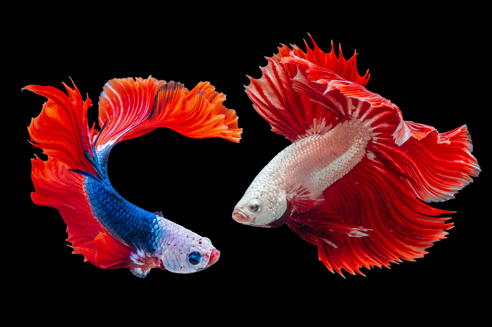
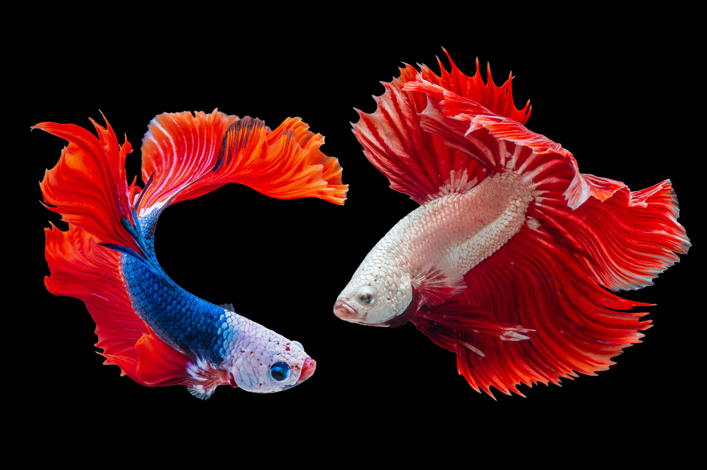

About Us
At Deep Blue Aquatic's we believe that fish deserve the right environment to live a happy and
healthy life. Goldfish bowls do not provide this and therefore we do not sell them. Goldfish
can live up to twenty years and grow to even 4 times their size when living in the right
conditions. Goldfish and other species need to live in a tank with a filter and ornaments to
hide in or investigate as they are intelligent! They also need plants to help keep the
oxygen levels in the water high. Fish extract oxygen from the water around them, and if
there is no filter to filter out waste, then there is no oxygen. Fish don't want to live in
their own toilet. Be kind, be safe, and buy a proper tank and filter for your new pet.
Ask any of the staff for help in choosing the right fish and tank for you!
For a guide on how to take better care of your fish/fishes please read this Guide !
Tropical Fish
We have a full range of tropical fish ready to buy online, specialising in Malawi Cichlids.
With a combined 27 years in the aquatic industry we have visited suppliers in 12 countries
enabling us to offer you the very best tropical fish on the market. As well as a whole range
of tropical fish to buy including sharks, loach, angelfish, tetras, plecos, fighting fish,
guppies, corys and more we also have a range of tropical invertebrates. These include crabs,
shrimps and lobsters.
Marine Fish
Our selection of Saltwater Marine fish for sale offers you everything from Invertebrates,
Corals, Live Rock, to a full range of fish. All our marine fish are available to buy online
and delivered to your door. Along with the range of marine fish we keep in stock to buy
online such as firefish, grammas, clownfish, tangs, seahorses, puffers and more we also take
orders for bamboo sharks, large angelfish, eels and any other marine fish you would like us
to obtain.
Frequently Asked Questions
What should I do if my fish is sick?
Isolate sick fish. Add antibiotics to the water and use antibiotic-medicated food.
Maintain
good water quality. Quarantine any fish with signs of the disease.
Do you do delivery?
No, our fish are trained to track you down 🤣 joking. Our fish are placed in plastic bags
with water and oxygen before being put in boxes.
Tropical
fish are then put in a suitable insulated box with a heat pack if necessary.
I won a goldfish at the fair. What tank do I need?
You'll need a three-foot
tank, a filter, gravel, decoration, tap safe, filter bacteria and
food
for that young goldfish, and ideally, the tank should be set up and mature before adding
any
fish. If you know anyone with a mature coldwater tank to house it until you are ready,
give
it to them, or a goldfish pond.
A small plastic bowl won't cut it unfortunately and the fish will die within a few days
of
being added. Not everyone agrees with goldfish being given out as prizes, so think
carefully
before doing so.
Can I mix goldfish with tropical fish?
Goldfish can take tropical temperatures no problem, but they will grow large and could
be
attacked by wild type tropical fish species like loaches and sharks. It's possible but
it's
a compromise and if your tank gets problems and you take expert advice, they'll tell you
to
remove the goldfish. Goldfish require more oxygen in warm water too.


 
